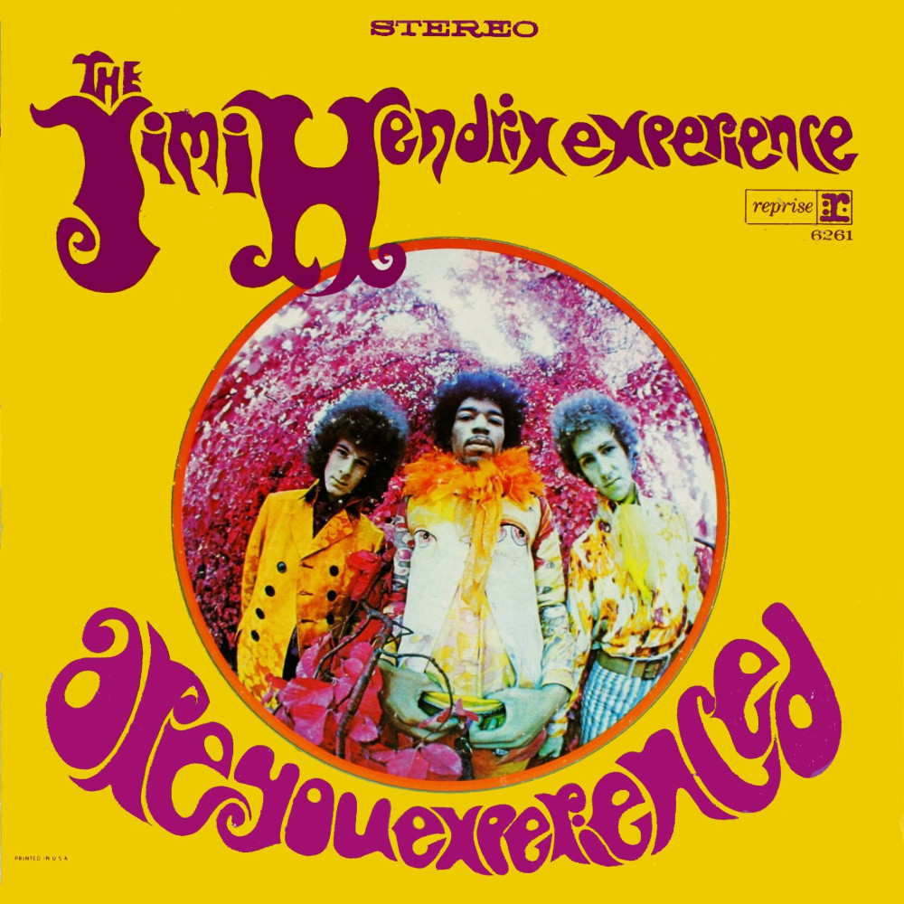
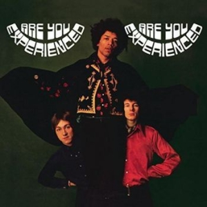

ARE YOU EXPERIENCED?
Released May 1967
- Musicians:
- Jimi Hendrix, Guitar & Vocals
- Mitch Mitchell, Drums & Backing vocals
- Noel Redding, Bass guitar & Backing vocals
Are You Experienced is the debut studio album bv the Jimi Hendrix Experience. Released in 1967, the LP was an immediate critical and commercial success, and it is widely regarded as one of the greatest albums of all time. The album features Jimi Hendrix's innovative approach to songwriting and electric guitar playing which soon established a new direction in psychedelic and hard rock music.


- Side One
- 1. Foxy Lady
- 2. Manic Depression
- 3. Hev Joe
- 4. Love or Confusion
- 5. May This Be Love
- 6. I Don't Live Today
- Side Two
- 1. The Wind Cries Mary
- 2. Fire
- 3. 3rd Stone from the Sun
- 4. Foxey Lady
- 5. Are You Experienced?